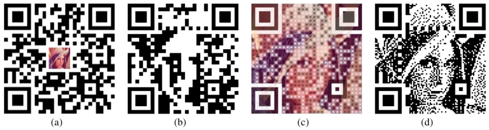

QR code was invented in Japan to replace bar code because it has the capacity to encode more information. The code was first used by the automobile industry to manage the production line as well as issue transaction slips. Nowadays, QR code is used widely around the world by companies to encode URLs to their websites so that customers do not have to type in but only need to scan the code using their smart phones. The code can also be seen on product packaging to encode information about that product.
As the QR code takes up space on the product packaging or advertisement, companies would want to have ways to improve the aesthetics of the code, such as embedding the company logo or product image into the code. There have been previous attempts at doing this; however, the methods are mostly tedious and require trial-and-error, and the results are only mediocre.
Chu et al. [2013] proposed an algorithm to embed halftone images into QR codes that gives high-quality results. The principle is to divide each module of the QR code into submodules and minimally bind these to the original module while adapting to the object halftone image. The authors also evaluated the reliability of each possible pattern made by the submodules, and tried to balance the reliability of the code and how closely it represents the halftone image by solving an optimization problem. Figure 1 shows the results generated by this algorithm compared to some previous methods.

|
In ideal situations, as long as the center submodules have the same color as the original modules, a decoder would be able to decode the QR code. In reality, the readability of the QR code can be affected by many factors, such as lighting condition, poor focus, etc. This is why the algorithm proposed by Chu et al. [2013] has to consider the reliability score and balancing reliability and regularization energy. However, in order to evaluate pattern reliability, a large database of QR codes is required, and the codes have to be modified to reflect real-life scanning condition. This is beyond the scope of this project. Therefore, for this project, I implemented a simplified version of this algorithm, which produces halftone QR codes but does not optimize the reliability or enhance features.
The program that was implemented takes as input an image (.jpg, .png, or .bmp). The image can be either colored or greyscale, but the program will automatically convert it to greyscale. The user has an option of rescaling the image so that it fits the QR code better. If the image is larger than the QR code, only the center part of the image would be embedded. If the image is smaller than the QR code, the image will appear at the center of the QR code. The default QR code version is set to version 6, which means the resulting halftone QR code would have a size of 123 × 123 pixels. The user then chooses the halftone algorithm to use, either Floyd-Steinberg error diffusion or dot diffusion algorithm. After that, the information that will be encoded in the QR code is input. If the amount of data exceeds the capacity of QR version 6, the minimum version that is required would automatically be used. The program then outputs the halftone QR code.
Below is an example of how the program is run to generate a QR code encoding the text "This is a picture of Donald Duck.", embedding a rescaled version of the image file donald_duck.jpg in the output halftone QR code.
Figure 2 shows some halftone QR codes that were generated using my implementation of the algorithm from Chu et al. [2013]. All of these QR codes could be decoded using both ZXing library (using .png images as input) and a QR code reader application on Android (scanned under normal room lighting). I have also tried generating other QR codes, and most could be decoded using both these methods.
Download source code here. (tested on MacOS X and Linux)
Requirements: